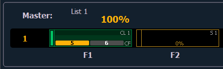

Channel and Parameter Filters can be used to allow only specified data to be played back. These are playback filters, and do not impact how data is recorded.
Channel and Parameter Filters can be associated with the following targets for playback:
Note: Channel and Parameters filters can also be used with Global Effects Faders. See Global Effects Fader
Note: For presets and palettes, channel and parameter filters can only be assigned in the fader configuration display (Tab 36) or in the fader list (Tab 35).
For cue lists and submasters, channel and parameter filters can be set in the following areas:
Tap or click on {Chan Filter} to assign channels or groups. Tap or click on {Param Filter} to open a list of available parameters that you can filter.
Note: Filters will travel with their assigned cue lists and submasters wherever they are mapped.
When a filter has been applied, an indicator will display in the fader ribbon. C will display for channel filter, and F is for parameter filter.

Press the red [X] to clear the channel or parameter filters listed.